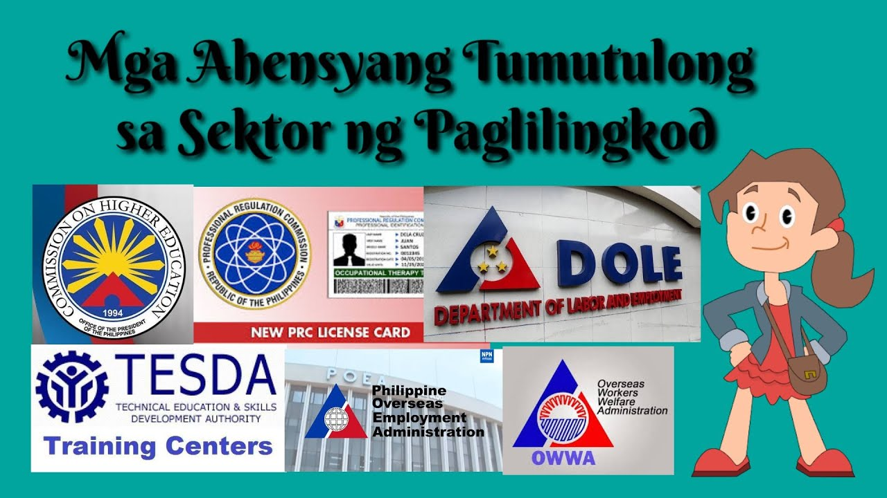
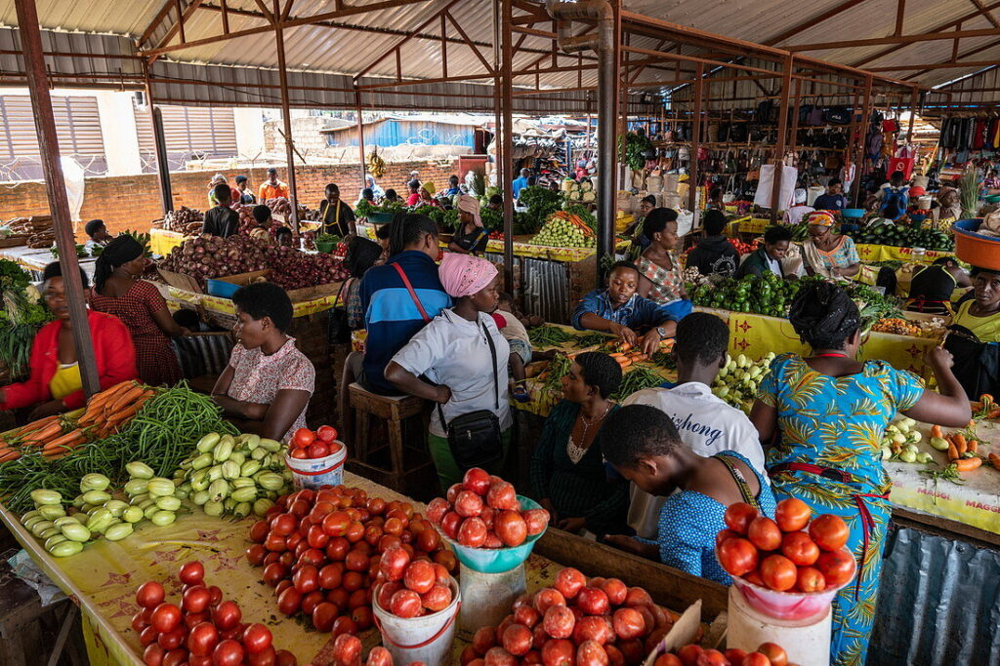
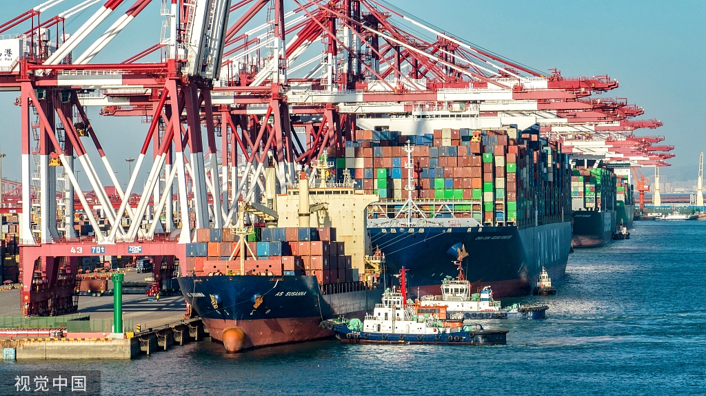

Lesson 1: Pambansang Kaunlaran
Kahulugan
- Estado ng bansa kung saan nakakaranas ng pagbabago ang lahat ng mamamayan, mula sa pinakamababang uri hanggang sa pinakamataas.
Mga Konsepto ng Pambansang Kaunlaran
- Pagbabago – proseso ng pag-iiba sa lipunan at ekonomiya.
- Pag-unlad – pag-angat ng pamumuhay; progresibong proseso (ayon kina Fajardo at Amartya Sen).
- Pagsulong – pag-usad tungo sa layunin, pagpapalawak ng kakayahan.
- Ebolusyon – pagbabago sa katangian sa mahabang panahon.
Dalawang Konsepto ng Pag-unlad (Todaro & Smith, 2012)
- Tradisyunal – patuloy na pagtaas ng income per capita.
- Makabago – malawakang pagbabago sa sistemang panlipunan.
Mga Salik sa Pagsulong ng Ekonomiya
- Likas na yaman
- Yamang-tao
- Kapital
- Teknolohiya at inobasyon
Mga Palatandaan ng Pag-unlad
- Makatwiran at dinamikong kaayusan
- Kasaganaan at kasarinlan
- Kalayaan sa kahirapan, hanapbuhay para sa lahat
- Sapat na serbisyong panlipunan
- Katarungang panlipunan
Sukatan ng Kaunlaran (UN)
- HDI (Human Development Index) – kalusugan, edukasyon, pamumuhay.
- GDP (Gross Domestic Product) – kabuuang halaga ng produkto at serbisyo sa loob ng bansa.
- GNP (Gross National Product) – kabuuang halaga ng produkto at serbisyo ng mamamayan, kahit nasa ibang bansa.
Antas ng Kaunlaran ng Bansa
- Developed Economies – mataas na GDP, HDI.
- Developing Economies – umuunlad na industriya, hindi pantay ang GDP/HDI.
- Underdeveloped Economies – mababang industriyalisasyon, agrikultura, GDP.
Mga Tungkulin para sa Pag-unlad
- Suportahan ang pamahalaan
- Sundin ang batas
- Alagaan ang kapaligiran
- Labanan ang korapsyon
- Maging produktibo
- Tangkilikin ang produktong Pilipino
- Magtipid ng enerhiya
- Makilahok sa gawaing pansibiko
Mga Gampanin ng Mamamayan
- Mapanagutan – pagbabayad ng buwis, pakikilahok
- Maabilidad – kooperatiba, negosyo
- Maalam – tamang pagboto, proyekto sa komunidad
- Makabansa – participative governance, pagtangkilik sa lokal na produkto

Lesson 2: Agrikultura
Agrikultura
- Kahulugan: Agham at sining ng pagpaparami ng hayop at halaman.
Gawain
- Pagsasaka
- Pangingisda
- Paghahayupan
- Paggugubat
Kahalagahan
- Pagkain
- Hilaw na materyales
- Trabaho
- Dolyar
- Sobrang manggagawa
Suliranin
- Climate change
- Polusyon
- Peste
- Pagkaubos ng yaman
Mga Patakaran sa Agrikultura
- Encomienda System – pamamahagi ng lupa sa mga Espanyol; nagdulot ng pang-aabuso sa mga katutubo.
- Land Registration Act (1902) – nag-aatas ng pagpaparehistro ng lupa; maraming Pilipino ang nawalan ng lupa dahil sa kakulangan sa kaalaman.
- CARP (Comprehensive Agrarian Reform Program, 1988) – layunin ang pamamahagi ng lupa sa mga magsasaka upang mapabuti ang kanilang kabuhayan.

Lesson 3: Industriya
Industriya
- Kahulugan: Pagproseso ng hilaw na materyales para sa pamilihan.
Sub-sektor
- Pagmimina
- Pagmamanupaktura
- Konstruksyon
- Utilities
Kahalagahan
- Trabaho
- Dolyar
- Teknolohiya
- Intermediate products
Suliranin
- Kakulangan sa pondo
- Kompetisyon
- Demand
Mga Patakaran sa Industriya
- Filipino First Policy (1958) – prayoridad ang mga negosyanteng Pilipino kaysa dayuhan.
- Oil Deregulation Law (1998) – malayang pagtatakda ng presyo ng langis ng mga kompanya.
- Retail Trade Liberalization Act (2000) – pagbubukas ng retail trade sa dayuhan.
- BOT Law (Build-Operate-Transfer, 1990) – pribadong sektor ang magtatayo ng proyekto, lilipat sa pamahalaan pagkatapos.
- Asset Privatization Trust (1986) – pagbebenta ng ari-arian ng pamahalaan upang mabawasan ang utang.

Lesson 4: Sektor ng Paglilingkod
Sektor ng Paglilingkod
- Kahulugan: Umaalalay sa produksyon, distribusyon, kalakalan, at pagkonsumo.
Pormal na Sektor
- Transportasyon
- Kalakalan
- Pananalapi
- Real estate
- Pribado at pampublikong serbisyo
Mga Ahensya
- DOLE – Department of Labor and Employment; nagtataguyod ng karapatan ng manggagawa.
- OWWA – Overseas Workers Welfare Administration; tumutulong sa OFWs.
- POEA – Philippine Overseas Employment Administration; nangangasiwa sa pag-aabroad ng manggagawa.
- TESDA – Technical Education and Skills Development Authority; nagbibigay ng kasanayan.
- PRC – Professional Regulation Commission; naglilisensya sa mga propesyonal.
- CHED – Commission on Higher Education; nangangasiwa sa kolehiyo at unibersidad.
Mga Batas
- Holiday Pay Law – karapatan ng manggagawa na bayaran kahit hindi pumasok sa holiday.
- Wage Rationalization Act (RA 6727, 1989) – pagtatakda ng minimum wage.
- Overtime Pay Law – dagdag na bayad sa oras na lampas sa regular.
- Maternity Leave Law (RA 11210, 2019) – 105 araw na leave para sa ina.
- Paternity Leave Law (RA 8187, 1996) – 7 araw na leave para sa ama.
- Thirteenth Month Pay Law (PD 851, 1975) – karapatan ng manggagawa sa dagdag na sahod tuwing Disyembre.

Lesson 5: Impormal na Sektor
Mpormal na Sektor
- Kahulugan: Ekonomiyang walang pormal na dokumento; hindi kasama sa GDP.
Halimbawa
- Tindera sa kalsada
- Pedicab driver
- Karpintero
Katangian
- Walang rehistro
- Hindi nagbabayad ng buwis
Kahalagahan
- Nagbibigay ng trabaho
- Murang produkto
- Tagasalo ng mahihirap
Mga Programa
- DILP (DOLE Integrated Livelihood Program) – tulong sa maliliit na negosyo.
- SEA-K (Self-Employment Assistance-Kaunlaran) – pautang para sa kabuhayan.
- ISLA (Integrated Services for Livelihood Advancement) – livelihood projects.
- Cash-for-Work Program – pansamantalang trabaho kapalit ng sahod.
- 4Ps (Pantawid Pamilyang Pilipino Program) – conditional cash transfer para sa mahihirap.

Lesson 6: Kalakalang Panlabas
Kalakalang Panlabas
- Kahulugan: Palitan ng produkto/serbisyo sa pagitan ng bansa.
Uri
- Bilateral – dalawang bansa
- Bloc – grupo ng bansa
Batayan
- Absolute Advantage – mas mahusay ang isang bansa sa paggawa ng produkto.
- Comparative Advantage (David Ricardo) – mas mababa ang opportunity cost ng isang bansa sa paggawa ng produkto.
Balance of Trade
- Surplus – mas mataas ang export kaysa import.
- Deficit – mas mataas ang import kaysa export.
Samahang Pandaigdigan
- WTO (World Trade Organization) – nagtatakda ng patakaran sa kalakalan.
- APEC (Asia-Pacific Economic Cooperation) – kooperasyon ng bansa sa Asya-Pasipiko.
- ASEAN (Association of Southeast Asian Nations) – samahan ng mga bansa sa Timog-Silangang Asya.
Mga Patakaran
- Taripa – buwis sa inaangkat na produkto.
- Kota – limitasyon sa dami ng inaangkat.
- Subsidy – tulong pinansyal ng pamahalaan sa lokal na produkto.
